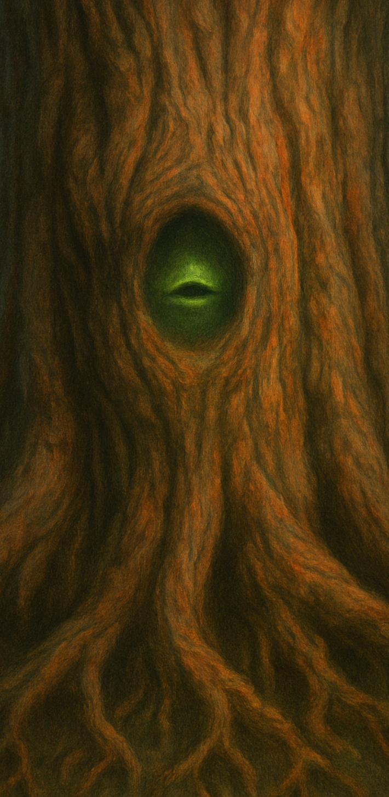

Gardien des énigmes
Lorsqu’une affaire touche à la magie ancienne ou simplement quand il l’estime nécessaire, Sapinas façonne une petite bouche directement dans son écorce, tout près de l’interlocuteur. Les fibres se resserrent, une lèvre de lignine se dessine. La voix qui en sort mêle le souffle du vent dans les feuilles au grave d’un bois qui résonne. Sapinas parle toujours là où l’on se tient, choisit spontanément la langue que l’on comprend, et écoute à travers les vibrations de son tronc et de ses racines ; il perçoit les intentions davantage que les mots.
Son caractère est ancien et sûr de lui : protecteur, curieux dès que quelque chose est en jeu, mais intraitable face au mensonge. Il n’obéit à personne ; il coopère quand on le respecte et qu’on prouve sa compréhension. Il déteste la précipitation, laisse parfois percer une ironie sèche, et préfère les échanges courts qui obligent à penser plutôt qu’à répondre par réflexe.
La bouche d’écorce n’apparaît jamais au hasard. Sapinas la crée pour une personne précise et la referme aussitôt si l’échange tourne à l’irrespect ou au danger. Il peut en faire naître plusieurs à la fois pour s’adresser à un groupe, mais garde toujours un ton mesuré, des phrases pesées, souvent tournées comme des énigmes.
Confronté à la magie ancienne, il déclenche parfois une épreuve : il pose une énigme. Une réponse juste ouvre un passage, déverrouille une salle scellée, ou accorde l’accès à un objet ou à des archives protégées. Une mauvaise réponse entraîne la fermeture immédiate des accès, ou l’impossibilité à la personne d’accéder à l’une de ses requêtes.